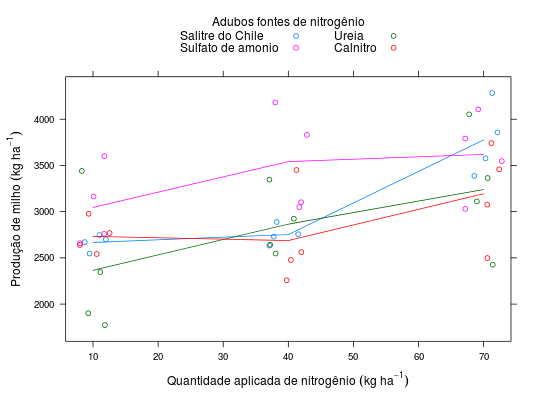
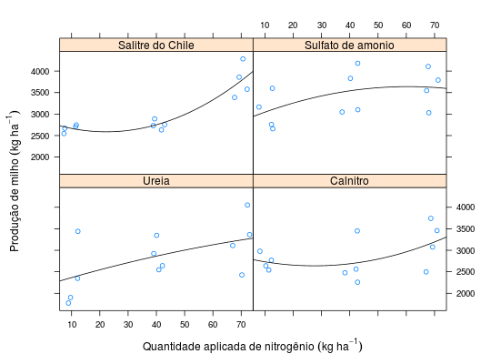

Experimento que estudou a produção de milho como função de fontes e doses de adubação nitrogenada. O experimento foi instalado em delineamento de blocos casualizados com arranjo de tratamento em parcela subdividida, sendo as doses casualizadas dentro dos níveis de adubo.
Um data.frame com 48 observações e 4 variáveis, em que
adubodoseblocoprodBANZATTO; KRONKA (2013), Quadro 6.2.5, pág. 144.
library(lattice) data(BanzattoQd6.2.5)#> Warning: data set ‘BanzattoQd6.2.5’ not foundstr(BanzattoQd6.2.5)#> 'data.frame': 48 obs. of 4 variables: #> $ adubo: Factor w/ 4 levels "Salitre do Chile",..: 1 1 1 2 2 2 3 3 3 4 ... #> $ dose : num 10 40 70 10 40 70 10 40 70 10 ... #> $ bloco: Factor w/ 4 levels "1","2","3","4": 1 1 1 1 1 1 1 1 1 1 ... #> $ prod : num 2747 2889 3578 3164 3831 ...ftable(with(BanzattoQd6.2.5, tapply(prod, list(adubo = adubo, dose = dose, bloco = bloco), FUN = mean)))#> bloco 1 2 3 4 #> adubo dose #> Salitre do Chile 10 2747 2702 2671 2547 #> 40 2889 2731 2633 2756 #> 70 3578 3387 3858 4284 #> Sulfato de amonio 10 3164 2658 3600 2760 #> 40 3831 3049 4182 3102 #> 70 4107 3031 3791 3547 #> Ureia 10 1902 1773 3440 2347 #> 40 2547 2642 3347 2924 #> 70 3364 2427 4053 3111 #> Calnitro 10 2978 2769 2640 2542 #> 40 3451 2258 2478 2562 #> 70 3742 2498 3458 3076xyplot(prod ~ dose, groups = adubo, data = BanzattoQd6.2.5, as.table = TRUE, jitter.x = TRUE, type = c("p", "a"), auto.key = list(title = "Adubos fontes de nitrogênio", cex.title = 1, columns = 2), xlab = expression( "Quantidade aplicada de nitrogênio"~(kg~ha^{-1})), ylab = expression("Produção de milho"~(kg~ha^{-1})))xyplot(prod ~ dose | adubo, data = BanzattoQd6.2.5, as.table = TRUE, jitter.x = TRUE, xlab = expression( "Quantidade aplicada de nitrogênio"~(kg~ha^{-1})), ylab = expression("Produção de milho"~(kg~ha^{-1})), panel = function(x, y, ...){ panel.xyplot(x, y, ...) m0 <- lm(y ~ poly(x, degree = 2)) panel.curve(predict(m0, newdata = list(x = x))) })